#install.packages("ISLR2") # ISLR2가 설치되지 않았다면 실행
library("ISLR2") # ISLR2 불러오기
packageVersion("ISLR2") # 설치된 패키지 버전 확인#> [1] '1.3.2'data(Wage)
data(Smarket)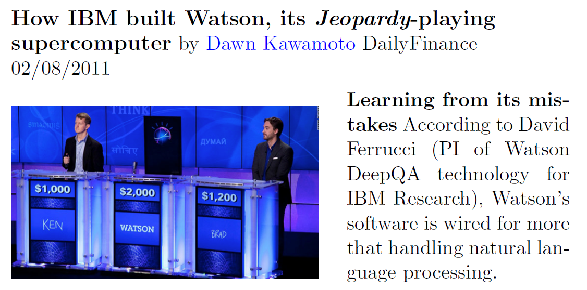
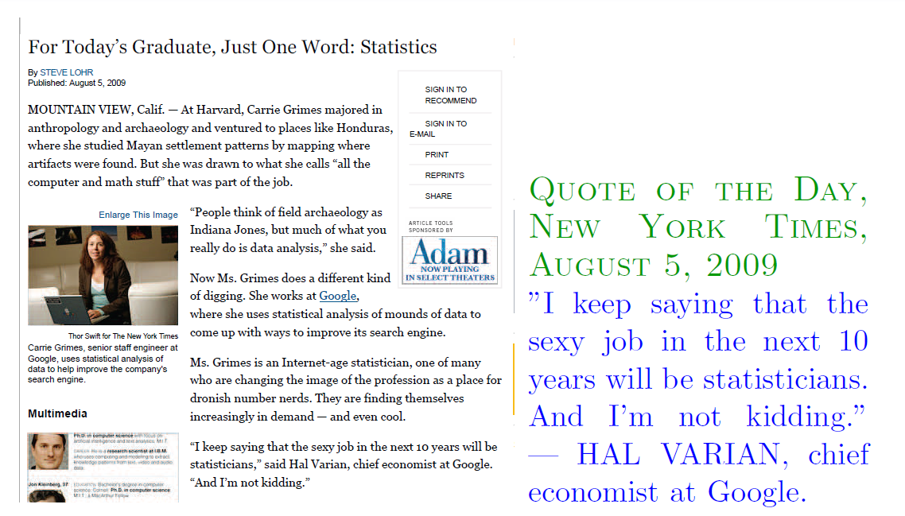
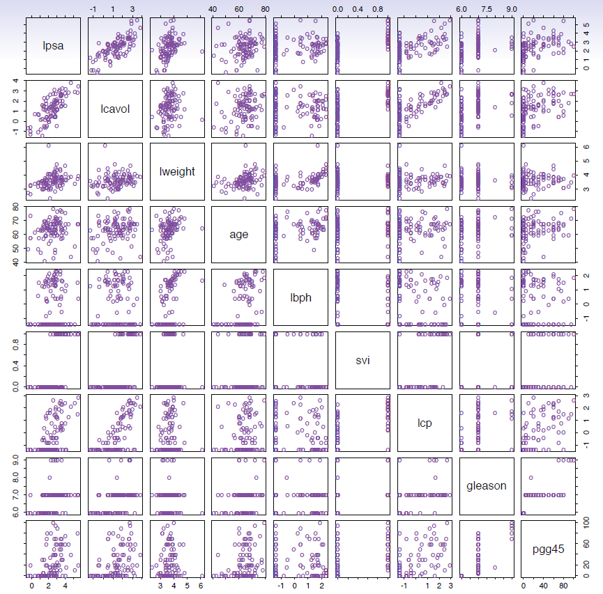
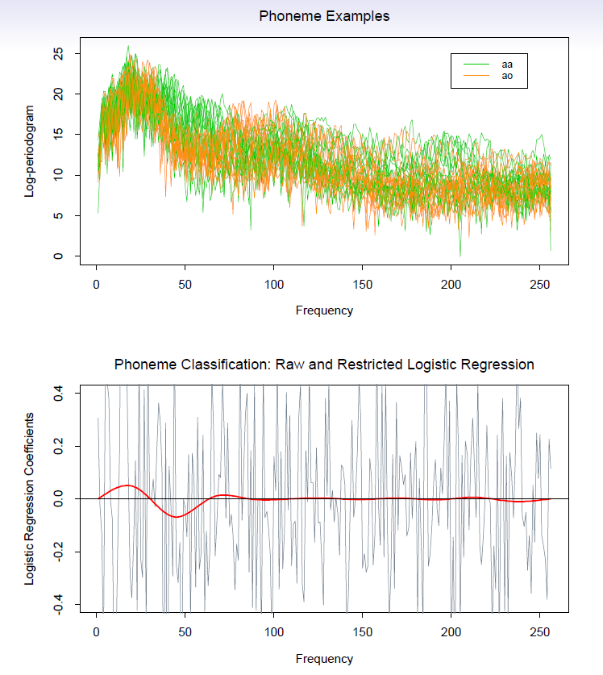
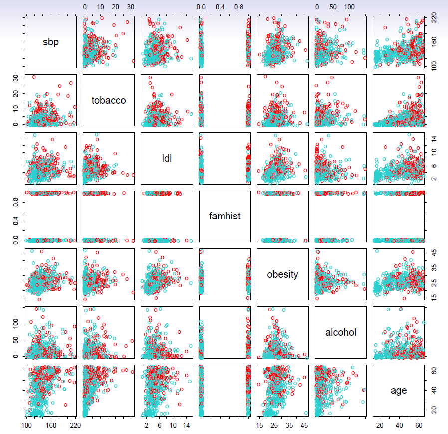
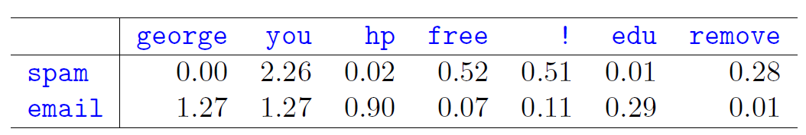
그림은 이메일 메시지에서 표시된 단어나 문자가 차지하는 평균 비율을 보여준다. 스팸과 정상 이메일 사이에서 차이가 가장 큰 단어와 문자를 선택하였다.
손으로 쓴 우편번호의 숫자를 식별한다.
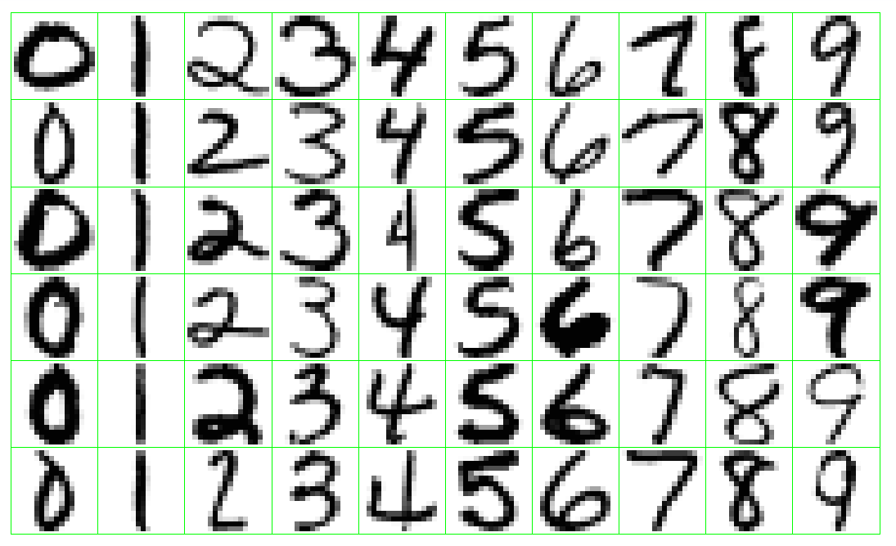
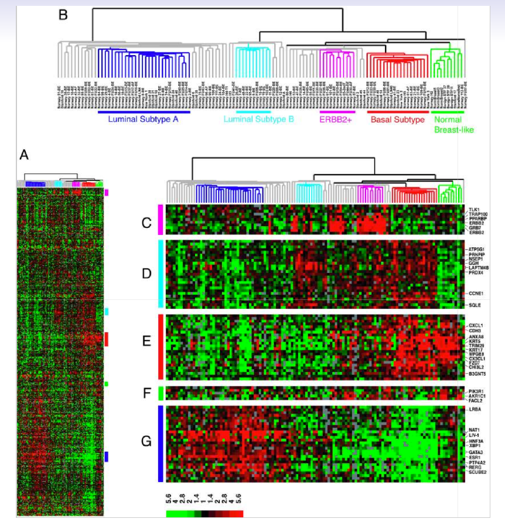
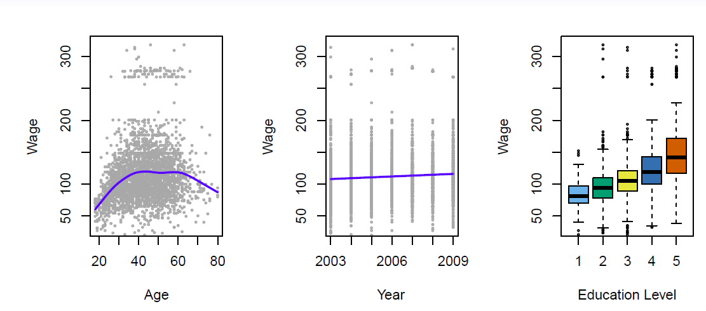
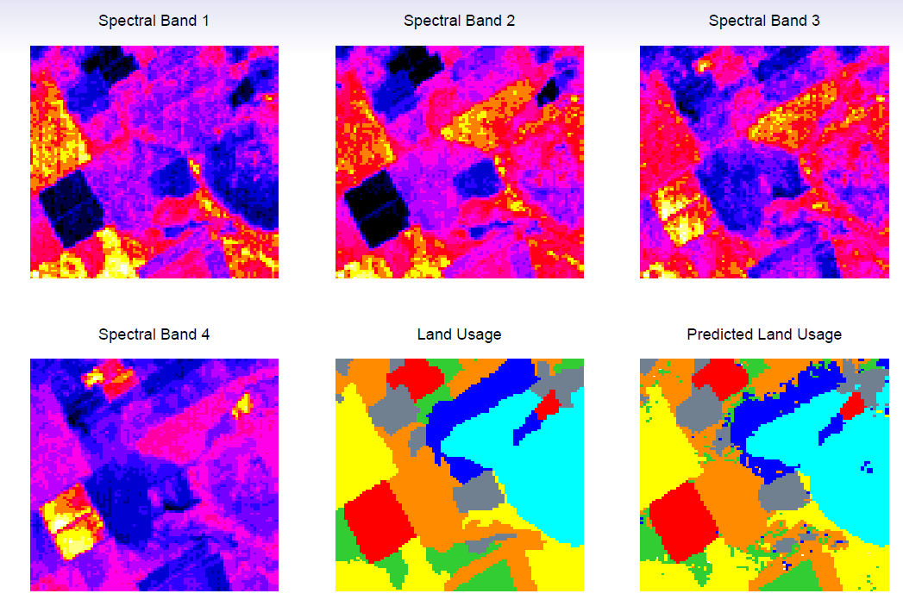
데이터를 이해하기 위한 도구는 크게 다음과 같이 구분할 수 있다.
지도학습(supervised learning)은 하나 이상의 입력을 이용하여 출력을 예측하거나 추정하는 통계모형을 구축하는 과정이다.
핵심은 훈련 데이터셋으로부터 학습한 결과를 새로운 입력 자료의 예측에 사용하는 것이다.
출발점은 다음과 같다.
주요 도구
훈련 자료를 이용하여 다음을 수행하고자 한다.
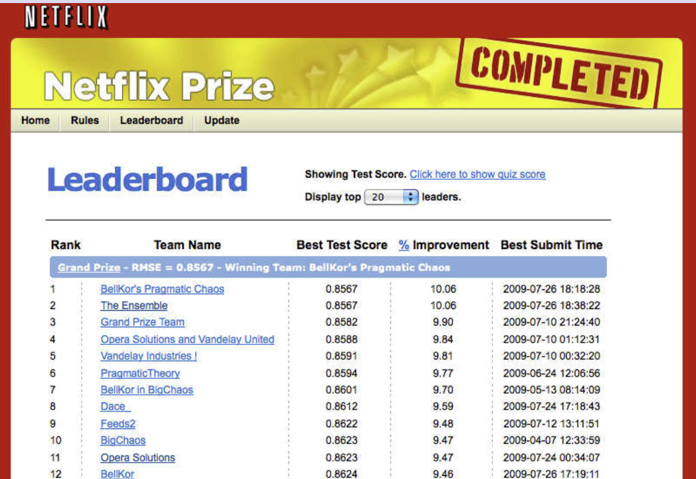
미국 대서양 연안 지역 남성 집단의 임금 자료를 살펴보자.
관심은 나이, 교육수준, 조사연도와 같은 배경요인이 임금에 미치는 관계와 영향을 분석하는 데 있다.
#install.packages("ISLR2") # ISLR2가 설치되지 않았다면 실행
library("ISLR2") # ISLR2 불러오기
packageVersion("ISLR2") # 설치된 패키지 버전 확인#> [1] '1.3.2'data(Wage)
data(Smarket)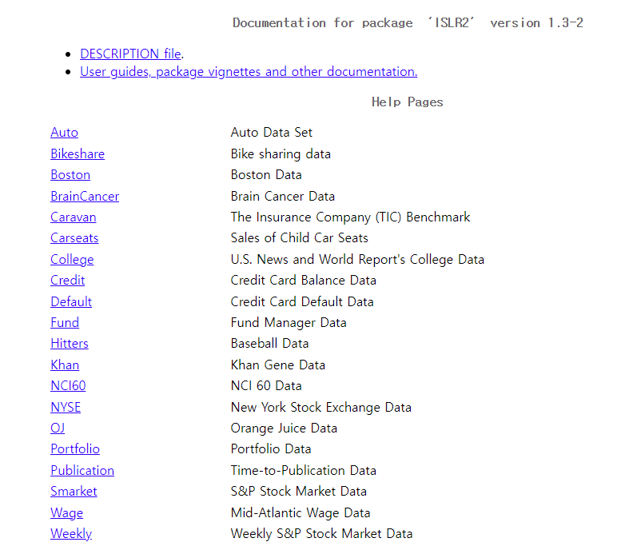
summary(Wage) # Wage 데이터 요약#> year age maritl race
#> Min. :2003 Min. :18.00 1. Never Married: 648 1. White:2480
#> 1st Qu.:2004 1st Qu.:33.75 2. Married :2074 2. Black: 293
#> Median :2006 Median :42.00 3. Widowed : 19 3. Asian: 190
#> Mean :2006 Mean :42.41 4. Divorced : 204 4. Other: 37
#> 3rd Qu.:2008 3rd Qu.:51.00 5. Separated : 55
#> Max. :2009 Max. :80.00
#>
#> education region jobclass
#> 1. < HS Grad :268 2. Middle Atlantic :3000 1. Industrial :1544
#> 2. HS Grad :971 1. New England : 0 2. Information:1456
#> 3. Some College :650 3. East North Central: 0
#> 4. College Grad :685 4. West North Central: 0
#> 5. Advanced Degree:426 5. South Atlantic : 0
#> 6. East South Central: 0
#> (Other) : 0
#> health health_ins logwage wage
#> 1. <=Good : 858 1. Yes:2083 Min. :3.000 Min. : 20.09
#> 2. >=Very Good:2142 2. No : 917 1st Qu.:4.447 1st Qu.: 85.38
#> Median :4.653 Median :104.92
#> Mean :4.654 Mean :111.70
#> 3rd Qu.:4.857 3rd Qu.:128.68
#> Max. :5.763 Max. :318.34
#> str(Wage) # Wage 데이터 구조#> 'data.frame': 3000 obs. of 11 variables:
#> $ year : int 2006 2004 2003 2003 2005 2008 2009 2008 2006 2004 ...
#> $ age : int 18 24 45 43 50 54 44 30 41 52 ...
#> $ maritl : Factor w/ 5 levels "1. Never Married",..: 1 1 2 2 4 2 2 1 1 2 ...
#> $ race : Factor w/ 4 levels "1. White","2. Black",..: 1 1 1 3 1 1 4 3 2 1 ...
#> $ education : Factor w/ 5 levels "1. < HS Grad",..: 1 4 3 4 2 4 3 3 3 2 ...
#> $ region : Factor w/ 9 levels "1. New England",..: 2 2 2 2 2 2 2 2 2 2 ...
#> $ jobclass : Factor w/ 2 levels "1. Industrial",..: 1 2 1 2 2 2 1 2 2 2 ...
#> $ health : Factor w/ 2 levels "1. <=Good","2. >=Very Good": 1 2 1 2 1 2 2 1 2 2 ...
#> $ health_ins: Factor w/ 2 levels "1. Yes","2. No": 2 2 1 1 1 1 1 1 1 1 ...
#> $ logwage : num 4.32 4.26 4.88 5.04 4.32 ...
#> $ wage : num 75 70.5 131 154.7 75 ...par(mfcol = c(1,3)) # 화면을 세 개의 세로 영역으로 분할
plot(x = Wage$age, y = Wage$wage, xlab = "나이", ylab = "연간 임금(천 달러)", col = "gray", pch = 20)
lines(lowess(x = Wage$age, y = Wage$wage, f = 1/5), col = "blue", lwd = 2)
plot(x = Wage$year, y = Wage$wage, xlab = "연도", ylab = "연간 임금(천 달러)", col = "gray", pch = 20)
lines(lowess(x = Wage$year, y = Wage$wage), col = "blue", lwd = 2)
plot(x = Wage$education, y = Wage$wage, xlab = "교육수준",
ylab = "연간 임금(천 달러)",
col = c("steel blue", "green", "yellow", "light blue", "red"))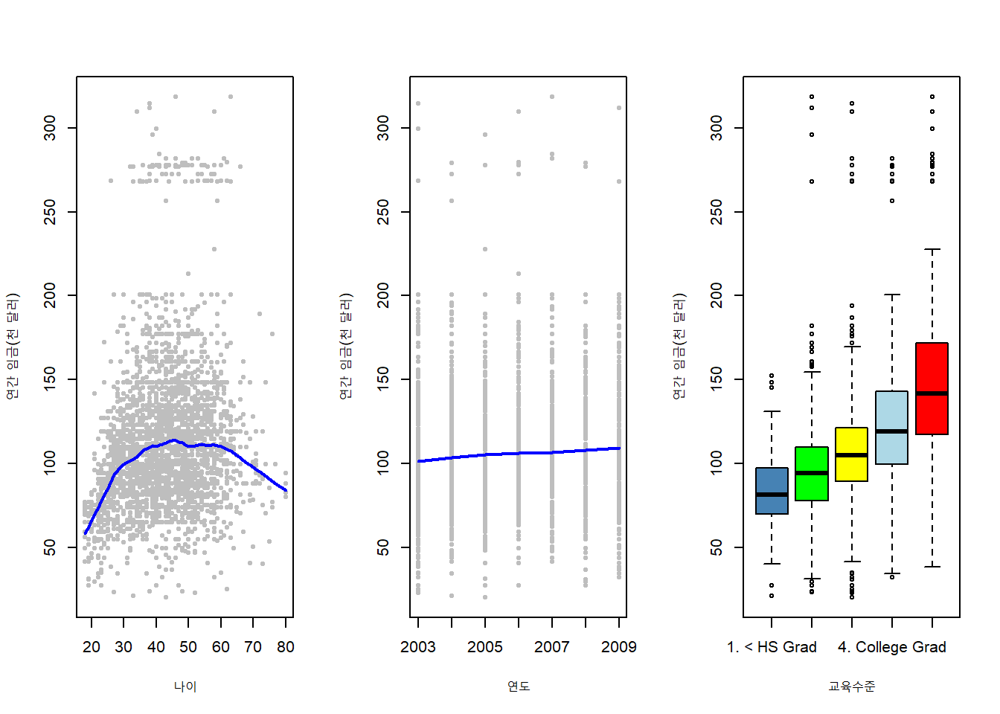
par(mfrow = c(1, 1))임금에는 상당한 변동성이 존재한다. 왼쪽 패널의 추세를 보면 임금은 약 45세까지 증가하다가 고령에서 다소 감소하는 경향을 보인다.
가운데 패널은 시간이 지나면서 임금이 다소 증가했음을 보여주며, 오른쪽 패널은 교육수준이 높을수록 임금이 뚜렷하게 증가하는 효과를 보여준다. 교육수준은 1이 고등학교 졸업장 없음, 5가 대학원 이상의 고급 학위를 의미한다.
summary(Smarket) # Smarket 데이터 요약#> Year Lag1 Lag2 Lag3
#> Min. :2001 Min. :-4.922000 Min. :-4.922000 Min. :-4.922000
#> 1st Qu.:2002 1st Qu.:-0.639500 1st Qu.:-0.639500 1st Qu.:-0.640000
#> Median :2003 Median : 0.039000 Median : 0.039000 Median : 0.038500
#> Mean :2003 Mean : 0.003834 Mean : 0.003919 Mean : 0.001716
#> 3rd Qu.:2004 3rd Qu.: 0.596750 3rd Qu.: 0.596750 3rd Qu.: 0.596750
#> Max. :2005 Max. : 5.733000 Max. : 5.733000 Max. : 5.733000
#> Lag4 Lag5 Volume Today
#> Min. :-4.922000 Min. :-4.92200 Min. :0.3561 Min. :-4.922000
#> 1st Qu.:-0.640000 1st Qu.:-0.64000 1st Qu.:1.2574 1st Qu.:-0.639500
#> Median : 0.038500 Median : 0.03850 Median :1.4229 Median : 0.038500
#> Mean : 0.001636 Mean : 0.00561 Mean :1.4783 Mean : 0.003138
#> 3rd Qu.: 0.596750 3rd Qu.: 0.59700 3rd Qu.:1.6417 3rd Qu.: 0.596750
#> Max. : 5.733000 Max. : 5.73300 Max. :3.1525 Max. : 5.733000
#> Direction
#> Down:602
#> Up :648
#>
#>
#>
#> str(Smarket) # Smarket 데이터 구조#> 'data.frame': 1250 obs. of 9 variables:
#> $ Year : num 2001 2001 2001 2001 2001 ...
#> $ Lag1 : num 0.381 0.959 1.032 -0.623 0.614 ...
#> $ Lag2 : num -0.192 0.381 0.959 1.032 -0.623 ...
#> $ Lag3 : num -2.624 -0.192 0.381 0.959 1.032 ...
#> $ Lag4 : num -1.055 -2.624 -0.192 0.381 0.959 ...
#> $ Lag5 : num 5.01 -1.055 -2.624 -0.192 0.381 ...
#> $ Volume : num 1.19 1.3 1.41 1.28 1.21 ...
#> $ Today : num 0.959 1.032 -0.623 0.614 0.213 ...
#> $ Direction: Factor w/ 2 levels "Down","Up": 2 2 1 2 2 2 1 2 2 2 ...par(mfrow = c(1, 3))
plot(x = Smarket$Direction, y = Smarket$Lag1, ylab = "오늘의 방향", xlab = "전일 DAX 수익률(%)",
horizontal = TRUE, col = c("orange", "skyblue"))
plot(x = Smarket$Direction, y = Smarket$Lag2, ylab = "오늘의 방향", xlab = "2일 전 DAX 수익률(%)",
horizontal = TRUE, col = c("orange", "skyblue"))
plot(x = Smarket$Direction, y = Smarket$Lag3, ylab = "오늘의 방향", xlab = "3일 전 DAX 수익률(%)",
horizontal = TRUE, col = c("orange", "skyblue"))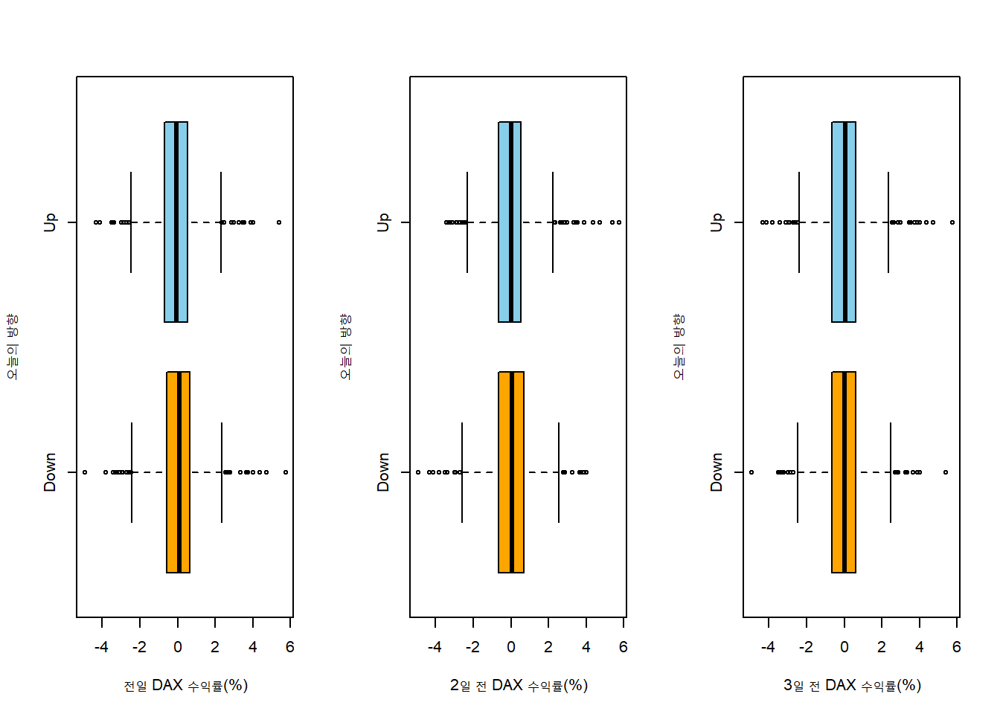
소비 습관에 따라 소비자를 군집화하는 것은 비지도학습의 한 예이다.
수집된 구매자료를 바탕으로 소비 습관이 유사한 소비자 집단을 찾는 것이 목적이다.
K-평균 군집화와 다양한 계층적 군집화 방법이 널리 사용된다.
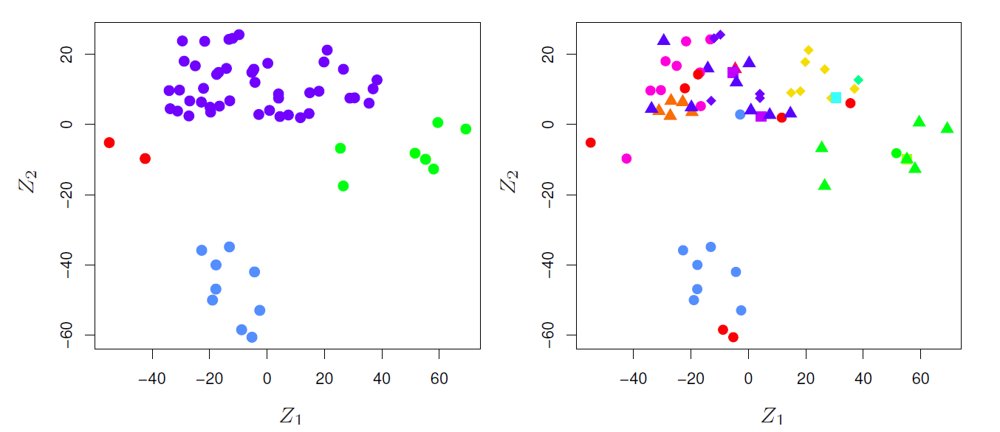
적절한 표기법을 선택하는 일은 언제나 어렵다.
Wage 데이터셋은 3,000명에 대해 11개의 변수를 포함하므로, 관측치 수는 \(n=3000\)이고 변수 수는 \(p=11\)이다. 변수에는 연도, 나이, 인종 등이 포함된다.\[ \begin{pmatrix} x_{11}&x_{12}&\cdots&x_{1p}\\ x_{21}&x_{22}&\cdots&x_{2p}\\ \vdots&\vdots&\ddots&\vdots\\ x_{n1}&x_{n2}&\cdots&x_{np}\\ \end{pmatrix} \]
\[ x_i=\begin{pmatrix} x_{i1}\\ x_{i2}\\ \vdots\\ x_{ip}\\ \end{pmatrix} \]
별도의 언급이 없으면 벡터는 열벡터로 표현한다.
\[ \mathbf{x}_j=\begin{pmatrix} x_{1j}\\ x_{2j}\\ \vdots\\ x_{nj}\\ \end{pmatrix} \]
\[ \mathbf{X}=(\mathbf{x}_1 \,\,\, \mathbf{x}_2 \,\,\, \cdots \,\,\, \mathbf{x}_p) \]
또는
\[ \mathbf{X}=\begin{pmatrix} x_{1}^T\\ x_{2}^T\\ \vdots\\ x_{n}^T\\ \end{pmatrix} \]
\[ \mathbf{X}^T=\begin{pmatrix} x_{11}&x_{21}&\cdots&x_{n1}\\ x_{12}&x_{22}&\cdots&x_{n2}\\ \vdots&\vdots&\ddots&\vdots\\ x_{1p}&x_{2p}&\cdots&x_{np}\\ \end{pmatrix} \]
한편
\[ x_i^T=(x_{i1} \,\,\, x_{i2} \,\,\, \cdots \,\,\, x_{ip}) \]
\[ \mathbf{y}=\begin{pmatrix} y_{1}\\ y_{2}\\ \vdots\\ y_{n}\\ \end{pmatrix} \]
\[ \mathbf{a}=\begin{pmatrix} a_{1}\\ a_{2}\\ \vdots\\ a_{n}\\ \end{pmatrix} \]
\[ \mathbf{A}=\begin{pmatrix} 1&2\\ 3&4\\ \end{pmatrix} \,\,\, \text{이고} \,\,\, \mathbf{B}=\begin{pmatrix} 5&6\\ 7&8\\ \end{pmatrix} \]
이면
\[ \mathbf{AB}=\begin{pmatrix} 1&2\\ 3&4\\ \end{pmatrix} \begin{pmatrix} 5&6\\ 7&8\\ \end{pmatrix}=\begin{pmatrix} 1\times 5+2\times 7&1\times 6 + 2\times 8\\ 3\times 5 + 4\times 7&3\times 6 + 4 \times 8\\ \end{pmatrix}= \begin{pmatrix} 19&22\\ 43&50\\ \end{pmatrix} \]